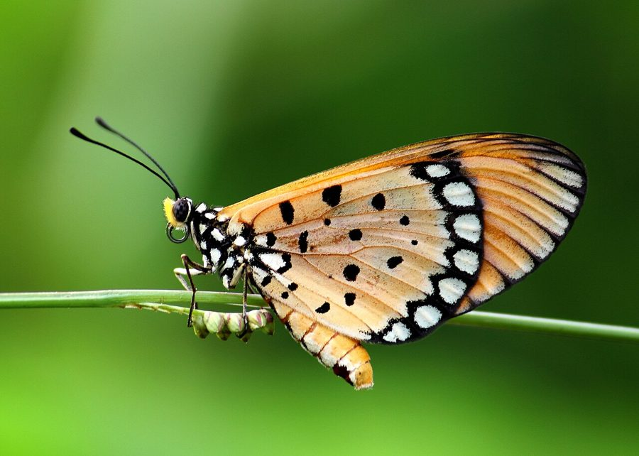

तौनी कोस्टरTawny Coster
Acraea terpsicore · Nymphalidae · INS-0022

- Scientific name
- Acraea terpsicore (Linnaeus, 1758)
- Family
- Nymphalidae
- Hindi
- तौनी कोस्टर
- Status here
- native
- IUCN
- LC
When to look कब देखें
Present all year.
तौनी कोस्टर / Tawny Coster
Acraea terpsicore (Linnaeus, 1758) — Nymphalidae
तौनी कोस्टर — पूर्वी उत्तर प्रदेश के घास के मैदानों, बंजर जमीनों और खेतों की मेड़ों पर पाई जाने वाली एक अत्यंत आम और आसानी से पहचानी जाने वाली निवासी तितली है। इसका शरीर और पंख चमकीले नारंगी-लाल (tawny-orange) रंग के होते हैं, जिन पर काले रंग के गोल धब्बे और पंखों के बाहरी किनारों पर एक काली पट्टी बनी होती है। इस तितली की उड़ान बहुत धीमी, सुस्त और ज़मीन के पास होती है, क्योंकि यह एक विषैली तितली है। इसके शरीर में दुर्गंधयुक्त और कड़वा पीला तरल (toxic fluid) होता है, जिसके कारण पक्षी और अन्य शिकारी इसे नहीं खाते। इसके कैटरपिलर मुख्य रूप से जंगली बेल (Passiflora foetida) के पत्तों को खाते हैं और उसी से अपनी विषाक्तता (toxicity) प्राप्त करते हैं।
Quick Identification त्वरित पहचान
| Feature | Description |
|---|---|
| Size | Medium-sized butterfly; wingspan 45–65 mm |
| Colouration | Bright tawny-orange to brick-red wings with a translucent look |
| Forewing | Narrow, black margin with a few small white spots; several distinct black spots in the middle |
| Hindwing | Broad black outer margin with a row of white spots; multiple black spots near the base |
| Flight | Very slow, weak, fluttering flight close to the grass; does not fly high |
Field tip: Look in dry grasslands or roadsides filled with weeds. Easily identified by its slow, lazy flight and translucent orange wings with black spots. It is so bold that it will not fly away quickly even if you get very close to it.
Morphology आकारिकी
Biometrics (typical measurements for adult specimens in the Gangetic plains):
| Measurement | Range |
|---|---|
| Forewing length | 22–32 mm |
| Wingspan | 45–65 mm |
Wing details: The wings are narrow and elongated, with a semi-translucent quality, especially near the apex of the forewings. The upperside of both wings is bright brick-red or tawny-orange. The forewings have a narrow black outer margin and about 7–9 black spots. The hindwings have a broad, solid black border containing a neat row of small white or yellowish spots, and multiple black spots near the wing base. The underside is similar but paler, with larger white spots on the hindwing border.
Behaviour & Ecology व्यवहार और पारिस्थितिकी
Toxic flyer and aposematic display.
- Aposematic coloration: The bright orange-and-black pattern is a warning display (aposematism) telling visual predators that it is highly toxic and dangerous to eat.
- Chemical defense: When attacked or handled, the butterfly releases a yellow, bitter, foul-smelling oily fluid (containing cyanogenic glycosides) from its leg joints. If a bird eats it, it immediately vomits and learns to avoid orange butterflies.
- Flight style: Fly slowly and lazily, often returning to the same flower, because they do not need to fly fast to escape predators.
Ecological Role पारिस्थितिक भूमिका
Pollinator and toxicity model.
- Pollination: Visit various low-growing wildflowers, aiding in pollination in grassland ecosystems.
- Batesian model: Serve as the toxic model for other non-toxic butterflies (like the female of Leptosia nina or certain moths) which mimic their colors for protection.
Life Cycle / Phenology जीवन चक्र
- Breeding: Breeds throughout the year, with numbers peaking during the monsoon rains.
- Egg laying: The female lays yellow, ribbed, cigar-shaped eggs in large clusters of 20–100 on the underside of host leaves. Eggs hatch in 3–4 days.
- Larval development: The caterpillars live and feed socially in groups during their first three instars, dispersing in the final instars. They grow for 12–15 days.
- Pupation: Pupates on plant stems or fences, forming a striking, pale white chrysalis with black lines and gold spots. The adult emerges in 5–7 days.
Larval (Caterpillar) Stage
- Caterpillar appearance: The mature caterpillar is 30–35 mm long, cylindrical, and dark reddish-brown to dark oily-brown. The head is reddish-orange. The body segments bear multiple rows of long, hard, branched black spines (scoli) arising from red bases.
- Host plant: Feeds heavily on Rambha (Passiflora foetida / Wild Passion Flower) and Turnera subulata. They sequester toxic cyanogenic compounds from these host plants, carrying the toxins through the pupal stage into the adult butterfly.
- Pupation site: Attaches vertically to stems or dry twigs. The pupa looks like a small white shell with black markings, warning predators of its toxicity.
Host Plants or Prey आहार
Larval host plants:
- Climbers/Vines: Rambha (Passiflora foetida) and Passiflora edulis.
Adult food:
- Nectar from low flowers like Tridax procumbens, Cosmos, and Bidens pilosa.
Predators / Natural Enemies शत्रु
- Avoided by Birds: Most insectivorous birds (like kingfishers and bulbuls) completely avoid adults.
- Invertebrates: Mantises and large jumping spiders occasionally attack them, as invertebrates are less sensitive to their chemical toxins.
- Parasitoids: Wasps (Braconidae) parasitize the caterpillars, laying eggs inside them.
Agricultural / Human Relevance कृषि प्रासंगिकता
Pollinator and weed controller.
- Crop safety: They do not raid any cultivated crops, making them completely harmless to farmers.
- Outreach value: Their extreme docility makes them excellent subjects for school kids to observe the butterfly lifecycle and chemical defense mechanisms in action.
Expected Locally स्थानीय रूप से अपेक्षित
Not a field record. Written from published accounts for eastern Uttar Pradesh. No confirmed local sighting yet — if you have seen it, that is what the atlas needs.
अभी तक स्थानीय पुष्टि नहीं। यह विवरण प्रकाशित स्रोतों से है, किसी अवलोकन से नहीं।
Commonly found along the embankments of the Ghaghra river canals and waste lands around Basti town. During October, dozens of their caterpillars can be found defoliating wild passion flower vines growing over wire fences near railway tracks.
Distribution वितरण
Global range: Widespread in India, Nepal, Bangladesh, Sri Lanka, Myanmar, and recently introduced and spreading across Southeast Asia to Australia.
In India: Common in the plains and lower hills throughout the country.
In Uttar Pradesh: Abundant resident in all open and rural districts.
In Basti district / eastern UP: Found in all blocks, especially in dry waste spaces and roadside ditches.
Research Questions शोध प्रश्न
Anyone can investigate these | कोई भी इन प्रश्नों की जाँच कर सकता है
- How do young coster caterpillars coordinate their social feeding movements on passion flower leaves? — Record time-lapse videos of larval clusters.
- What is the survival rate of Tawny Coster pupae when placed on white walls vs. green plant stems? — Place pupae in different sites and monitor predation.
- Does the chemical defense of the butterfly protect it from predatory weaver ants? — Observe interactions of ants and adults on host plants.
- How does the presence of Passiflora foetida affect the local population density of this butterfly in Basti? / बस्ती में जंगली पैशन फ्लावर की उपलब्धता इस तितली की स्थानीय आबादी को कैसे प्रभावित करती है? — Map host vine density and count adult butterflies.
- Does the slow flight of this species change when it is chased by a dragon fly? / जब किसी व्याधपतंग (ड्रैगनफ्लाई) द्वारा पीछा किया जाता है तो क्या इस तितली की धीमी उड़ान में कोई बदलाव आता है? — Record flight speeds under threat.
Similar Species मिलती-जुलती प्रजातियाँ
| Species | Key Difference | हिंदी |
|---|---|---|
| Danaus chrysippus (Plain Tiger) | Much larger (wingspan ~75 mm); has white spots on black apex of forewings; flight is stronger and higher | प्लेन टाइगर — बड़ा आकार, पंखों के सिरों पर सफ़ेद धब्बे |
| Danaus genutia (Striped Tiger) | Larger; wings have bold black lines running along the veins (tiger-like); stronger flight | बाघ तितली — पंखों की नसों पर मोटी काली रेखाएँ |
| Delias eucharis (Common Jezebel) | White wings above; underside of hindwings has bright yellow and red margin spots; flies high in tree canopies | जेज़ेबेल तितली — सफ़ेद और पीले पंख, पेड़ों पर उड़ना |
Field rule: Medium size, translucent orange wings with black spots and a broad black margin on hindwings, and very slow low flight close to the grass identify the Tawny Coster.
Taxonomy & Classification वर्गीकरण
Original description. Carl Linnaeus described the Tawny Coster as Papilio terpsicore in 1758 in his Systema Naturae (Ed. 10, Vol. 1, p. 466). The type locality was Asia (India). The genus name Acraea is derived from the Greek akratos (pure/unmixed), or possibly named after a mythological epithet. The specific name terpsicore refers to Terpsichore, the Muse of dance in Greek mythology.
Subspecies. Monotypic in India (the nominate form A. t. terpsicore occurs across the region).
Family and order placement. Placed in the order Lepidoptera, family Nymphalidae, subfamily Heliconiinae (the costers and heliconians).
Phylogenetic notes. Acraea terpsicore is one of the few Asian representatives of the predominantly African genus Acraea, having colonized Asia relatively recently in evolutionary terms.
IUCN status rationale. Listed as Least Concern (LC) globally by the IUCN Red List due to its expanding range, high abundance, and lack of significant threats.
Photo Gallery फोटो गैलरी
References संदर्भ
- Linnaeus, C. (1758). Systema Naturae per regna tria naturae. Editio Decima, Reformata. Laurentii Salvii, Holmiae, p. 466. [original description]
- Kunte, K. (2000). Butterflies of Peninsular India. Universities Press, Hyderabad.
- Kehimkar, I. (2008). The Book of Indian Butterflies. Bombay Natural History Society, Mumbai.
- Woodhouse, L. G. O. (1949). The Butterfly Fauna of Ceylon. Ceylon Government Press, Colombo.
- IUCN SSC Butterfly Specialist Group (2024). Acraea terpsicore. IUCN Red List of Threatened Species. Ver. 2024.
- GBIF Occurrence Data — Acraea terpsicore, Uttar Pradesh (2010–2025).
Source file: species/fauna/insects/tawny_coster.md